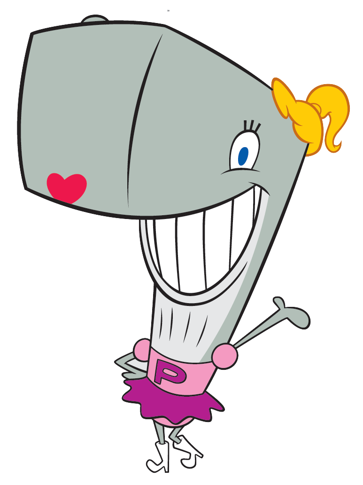

8)Пёрл Крабс

Описание:
Перл Крабс — кашалот-подросток, дочь мистера Крабса. Поскольку она кашалот, в отличие от остальных персонажей Перл изображается как необычайно высокая и тяжёлая. Её размер по сравнению с другими персонажами часто используется для визуальных приколов в мультсериале: например, она способна встряхнуть весь Красти Краб, когда она прыгает, и может наполнить весь ресторан слезами, когда она плачет. Куда бы она ни пошла, она громко топает и заставляет землю слегка дрожать. По характеру Перл — жизнерадостная, наивная и доброжелательная. Она очень дружелюбна и доверчива к своим сверстникам в средней школе Бикини-Боттом, несмотря на то, что они обычно не ведут себя так же с ней.
День Рождения: 23 сентября 1997 года.
Пол: Женский
Рост: Неизвестен
Вес: Неизвестен
Интересные факты:
-Перл Крабс является приёмной дочью Мистера Крабса
-До девятого сезона Перл была единственным кашалотом, которого когда-либо показывали в мультсериале. Но, с его начала, несколько кашалотов появляются в таких сериях, как "Побег из тюрьмы!".
-Некоторые официальные работы показывают Перл только с одним набором ресниц на верхней части ее глаз, а не с ресницами на верхней части и нижней.
-Мистер Крабс никогда не рассказывал своему дедушке о Перл до "Дедушка-пират", в котором дедушка ошибочно принимает Перл за монстра.
Назад